Cuarenta encapuchados lanzan cócteles molotov a una sede de la Guardia Civil.

Los agentes disparan al aire y el episodio acaba sin heridos ni detenidos.
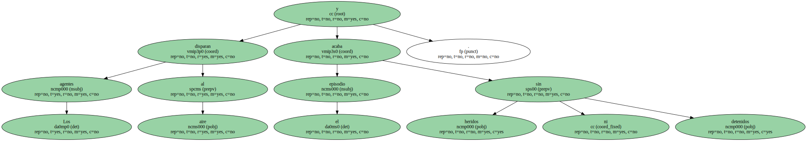El PP y el PSOE critican a Arzalluz por la comprensión que demuestra hacia EH.
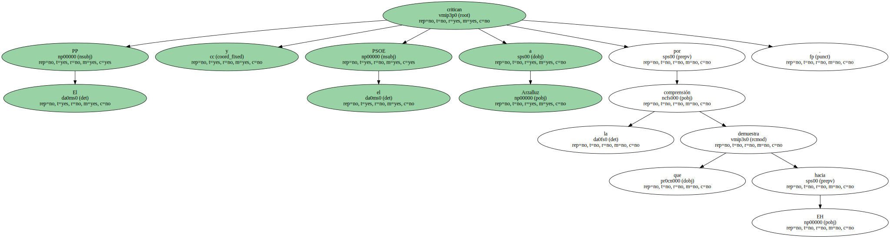Una banda de 40 encapuchados atacó durante la madrugada de ayer con cócteles molotov la casa cuartel de la Guardia Civil en el barrio de Algorta , en Getxo.
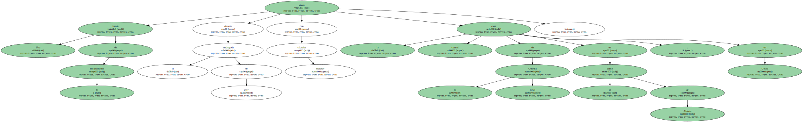Los agentes de guardia hubieron de disparar al aire para intimidar a los atacantes.
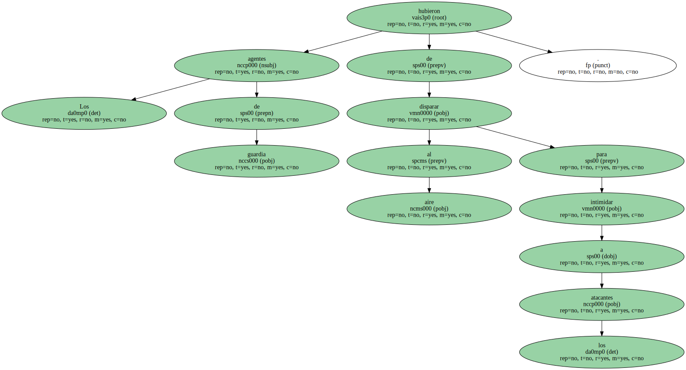El sabotaje , perfectamente planificado , según las fuerzas de seguridad , no causó heridos.
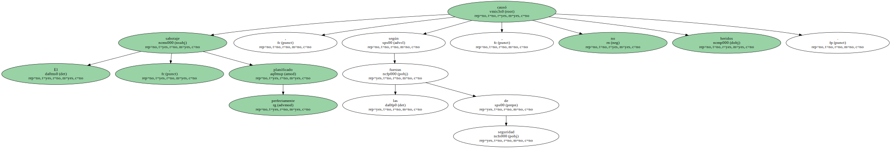Esta nueva acción de los violentos se produjo pocas horas después de que el presidente del PNV , Xabier Arzalluz , atribuyera la responsabilidad de la violencia callejera a grupos incontrolados y reafirmase su voto de confianza en la dirección de la coalición aberzale Euskal Herritarrok ( EH ) , la marca electoral de HB , de la que dijo que está haciendo todo lo posible por acabar con la violencia en el País Vasco.
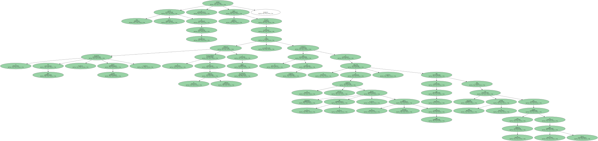Los guardia civiles que vigilaban ayer la casa cuartel de Algorta vieron llegar a la una y media de la madrugada a un nutrido grupo de encapuchados.
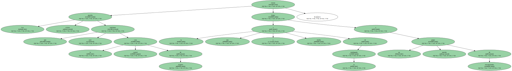Todo sucedió en cuestión de minutos.
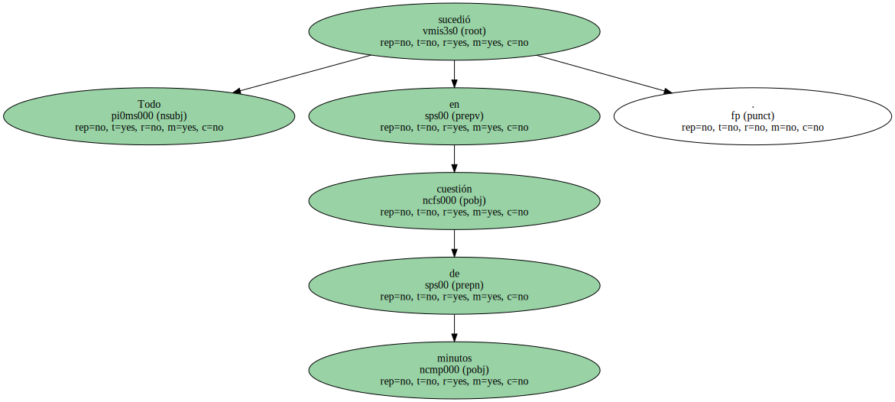Primero , los encapuchados destruyeron las cámaras de videovigilancia del cuartel.
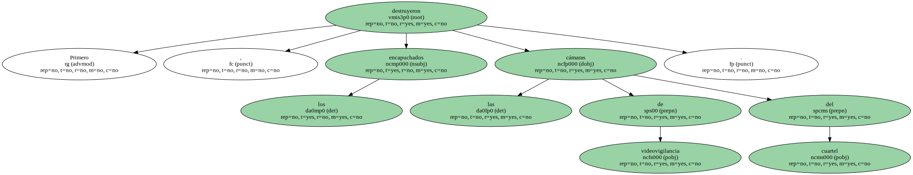Y luego , colocándose en formación , lanzaron los artefactos incendiarios contra el edificio.

Los agentes repelieron la agresión con disparos al aire.
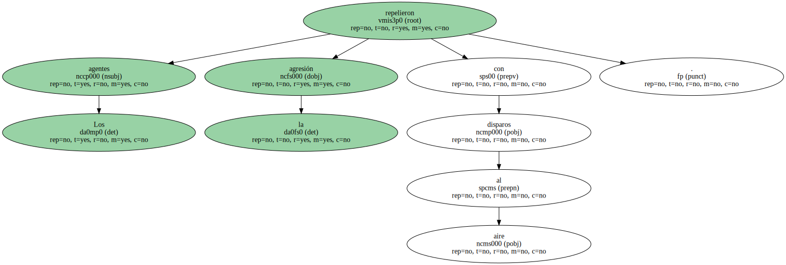La Ertzaintza , que acudió minutos después , recogió del suelo casquillos del calibre 7,65 utilizados en los fusiles Cetme y de 9 milímetros.
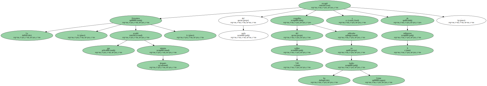La mayoría de los aproximadamente 40 cócteles molotov se estrellaron contra la fachada del cuartel.
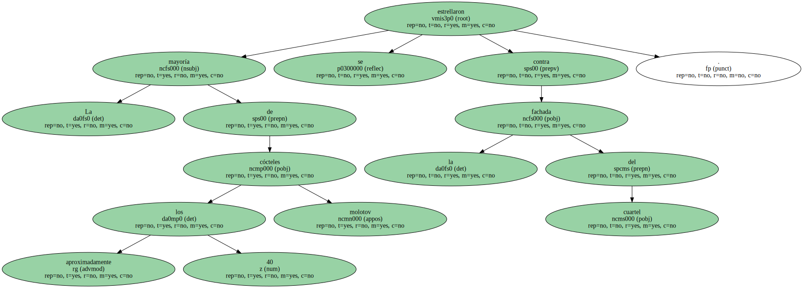Algunas botellas estallaron en el interior , aunque no lograron provocar ningún incendio.
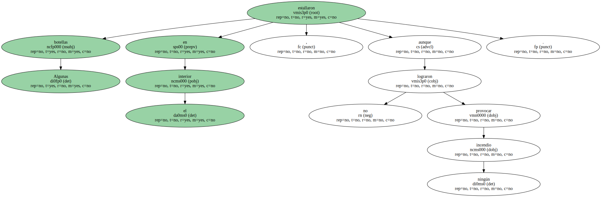Las dependencias afectadas se utilizan como para reuniones y cocina , por lo que a esa hora no había nadie dentro.
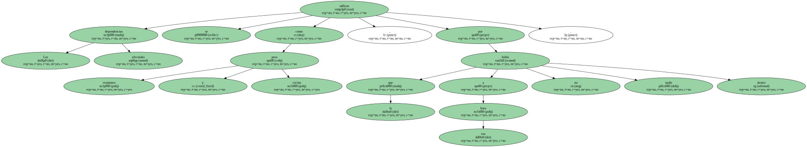Una decena de atentados.
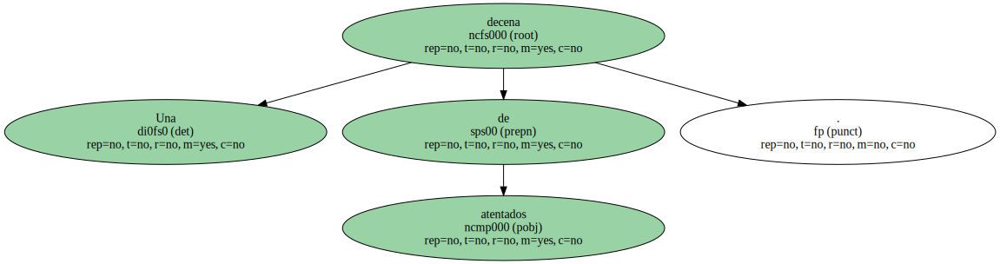Con el de ayer , suman ya una decena los atentados contra estas dependencias de la Guardia Civil en Getxo.
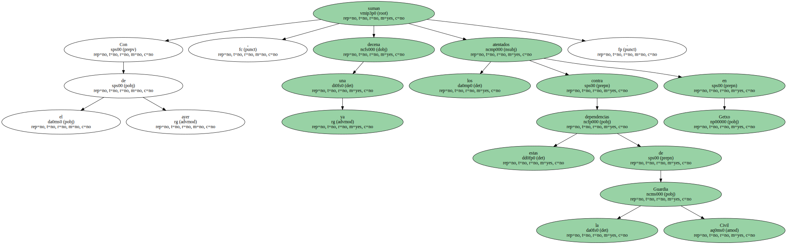ETA intentó hacerlas volar por los aires cuando todavía se encontraban en construcción , hace ya más de 20 años.
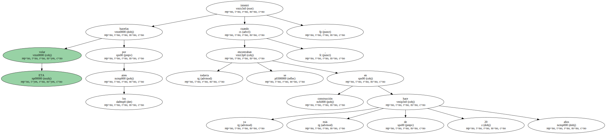Desde que la banda etarra declaró la tregua , el pasado día 16 de septiembre , ya han sido bombardeadas dos veces , la primera el pasado 5 de enero.
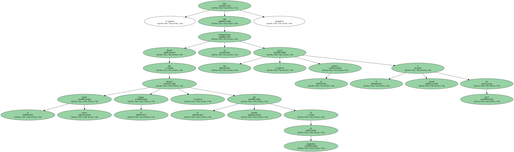Ni en enero ni ahora se produjeron detenciones.

Los violentos aprovecharon ayer la presencia de cientos de jóvenes en las calles de Algorta , que celebraban las fiestas de San Ignacio , para camuflarse entre la multitud.
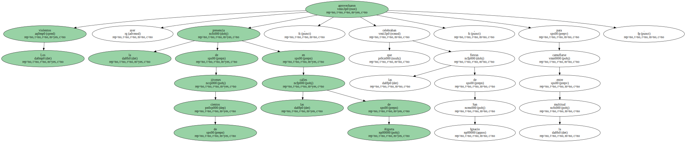Las condenas de los partidos demócratas al ataque de ayer tuvieron un tono especial por parte del PP y del PSOE , ya que el atentado fue precedido por unas declaraciones de Arzalluz en las que se mostraba convencido de que EH hace " todo lo posible " para acabar con la violencia callejera.
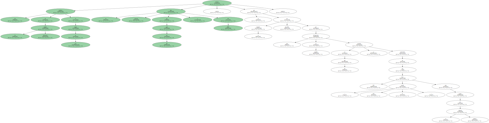El portavoz del PP en el Parlamento vasco , Leopoldo Barreda , preguntó al líder del PNV con qué gafas mira la situación , y dijo que " produce sonrojo " observar que " comprende y disculpa el discurso de HB ".
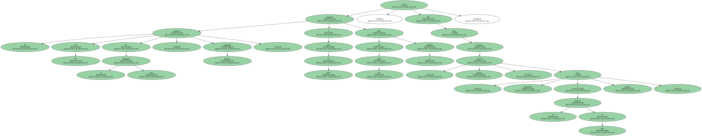En opinión del PP , es la coalición aberzale quien tiene el " interruptor " y modula a su antojo el " terrorismo callejero ".
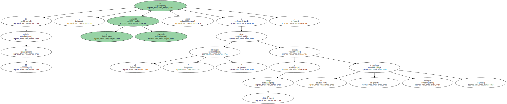También el líder de los socialistas vascos ( PSE ) , Nicolás Redondo Terreros , censuró las " paniaguadas " manifestaciones de los dirigentes del nacionalismo moderado.
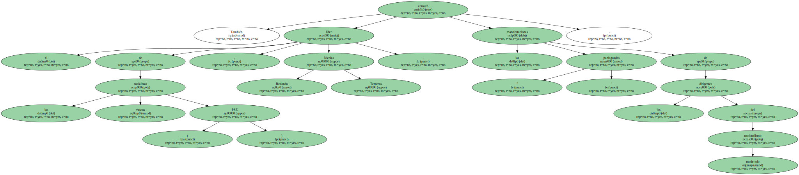Precisó que el incremento de los " actos fascistas " está en relación con la rectificación de los dirigentes alaveses de EH , al renegar de la denuncia contra la violencia.
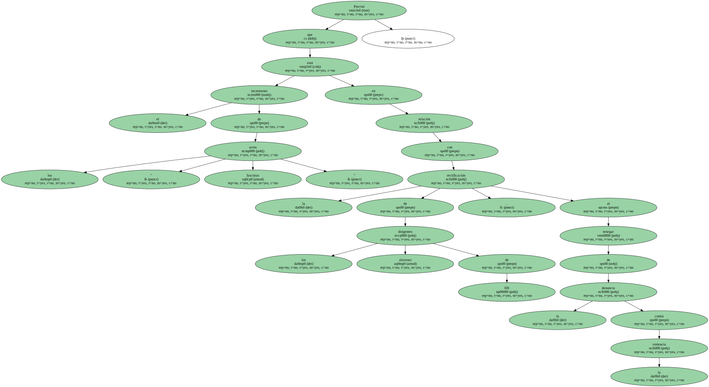El eurodiputado de EA Gorka Knörr consideró " lamentable " el ataque y pidió a EH que se desmarque de la violencia , aunque lo haga sin " condenas rimbombantes ".
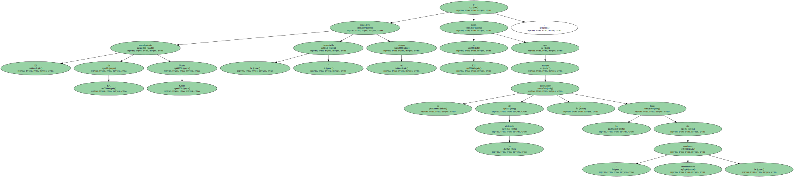